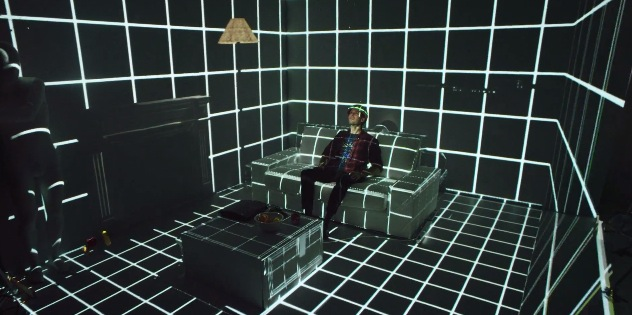

Who Are We?
To operate efficiently and competitively in today’s dynamic economy, companies are evolving how they manage business, work and talent. N.U Consulting is a unique alternative to traditional Tier 1 consultancy services, providing our clients the opportunity to engage expert consultants in a flexible and agile way.
N.U Strategic Consulting provides project based and outsourced services through tailored solutions and rapidly mobilised, high-performing teams.
N.U Strategic Consulting forms part of Allians Group, the largest privately-owned staffing and services company in the world with a turnover in excess of $11.5 billion. This enables us to provide a high touch personalised service and have infrastructure of significant size and scale to support global programmes.
About Our Consulting
At N.U strategic Consulting we who supply the latest of Consulting offerings to the market,These services include
- Blockchain
- Autonomous Things
- Immersive Experience
Blockchain

- A blockchain consists of a number of blocks, hence the term. Each block is a record of transactions of specific data, which can contain anything from Cryptos to voting records to medical data. When one block is completed and can no longer be updated with new data, it is added to the chain and another, new block, is formed.
- All the information on the blockchain is publicly available, as it’s a decentralized system. This means that the information is stored on many computers distributed around the globe, and there’s no specific party or authority to control it.
Autonomous Things (Robots)
- The term “autonomous things” is being used more and more in the technology world to talk about phenomena powered by the latest advancements in artificial intelligence and machine learning
- Autonomous things are things that work autonomously without human guidance or direct intervention.
Learn more about Autonomous Things
Immersive Experience
- What is immersive Expereince? An immersive experience elicits the realistic feeling of being there or being present within a virtual space. In other words, the consciousness of a person is transported from their immediate reality to an alternative reality. As a trick of the mind, the person is now learning and deciding within this new context.
- The trick is enhanced if the person can sense himself or herself as an avatar (i.e., an object with eyes and ears) within that immersive space. Further, the usefulness of an immersive experience increases if one experiences it with others. Multi-person immersive spaces allow shared experiences and collaborative actions. Hence, immersion is defined as being there with others.